Those are probably my first ever Blender animations. They were YouTube intros for someone with a magic-related channel.
I remember stitching the clips together in Windows Movie Maker.
Somehow my only Blender goal was making shitty intros for YouTube channels.I think I also made the logo which is just a wolf photo with its background removed and a painting effect applied, all in PowerPoint.
Not me stealing game models to make shitty video, probably learnt to scatter shit in Blender that day and thought it would looks cool with a tank.Another WoT Youtuber intro yayyy. I doubt Movie Maker was able to make the effects at the end, so I assume I discovered some other crappy software since.
OMFG WHAT IS THIS TIME CAPSULE; PEAK 2015 LIAM CONTENT. Yes I was a little obssessed with World Of Tanks, how'd you found out ?
Fucking Skype running in background and rocking Blender version 2.75
This is when the cringe levels get a bit lower, even if I'm still in my CoD GFX era.
This is my first 3d model I textured with a professional software (that I also paid):
Quixel DDO.
It was a super slow plugin for Photoshop, but with really great material library.
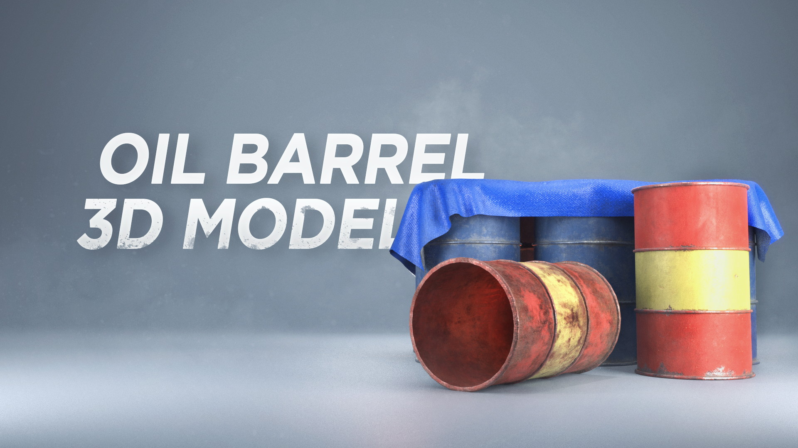
One a few asset I fully made from scracth and that I tried to sell online.
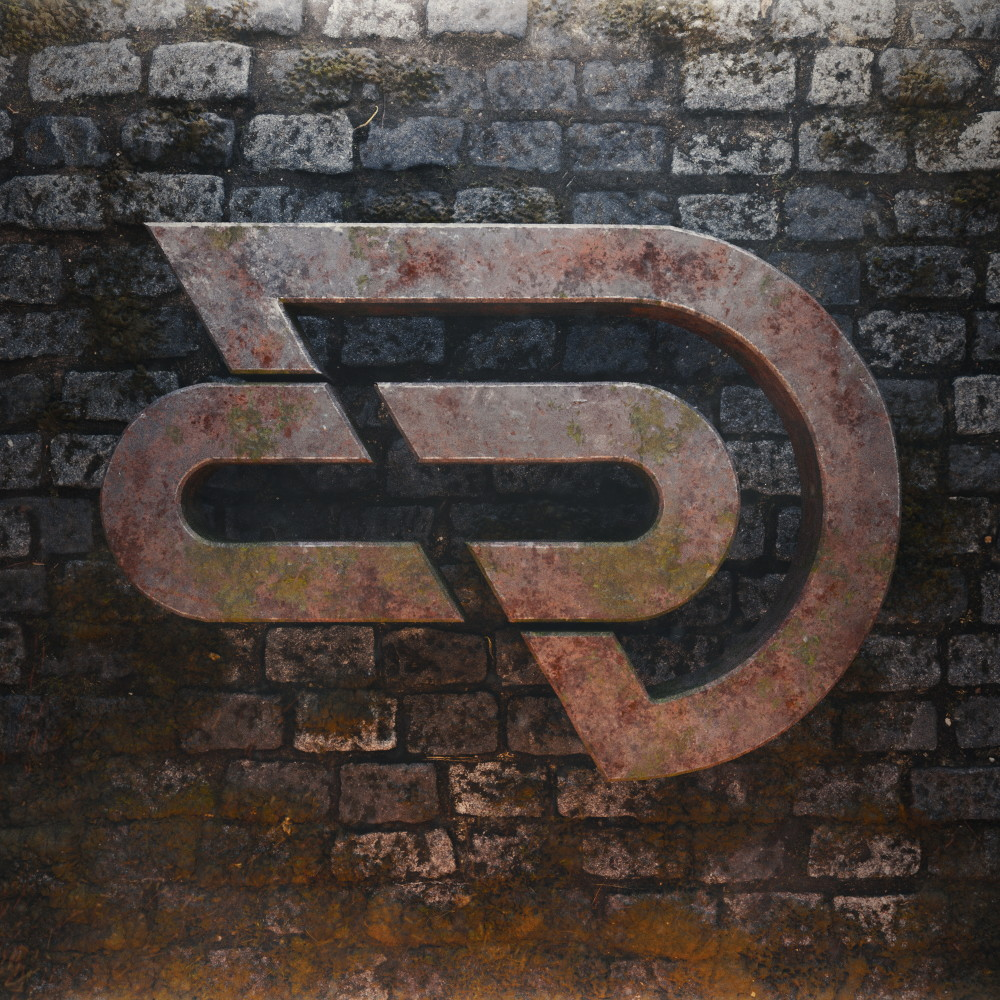
A 3d logo for another CoD team. Ground texture was picked online, but I textured all the logo myself.
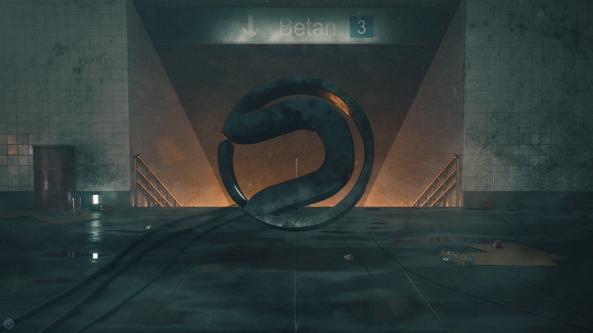
A rare instance of a full 3d scene made for some CoD team player.
I think it was one of the firt times I used Substance Designer to create some textures.
Random shitty abstract wallpaper for the same CoD team.
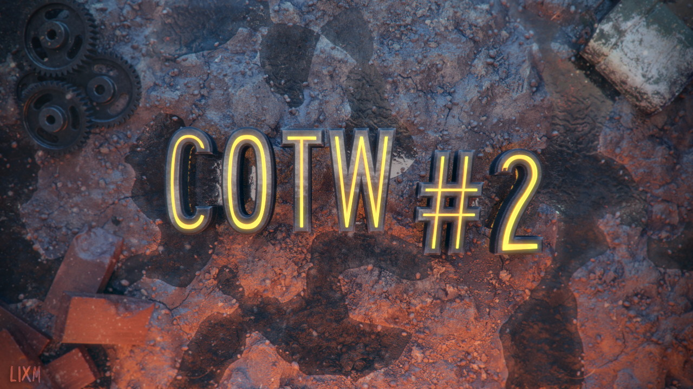
A fully 3d YouTube thumbnail.
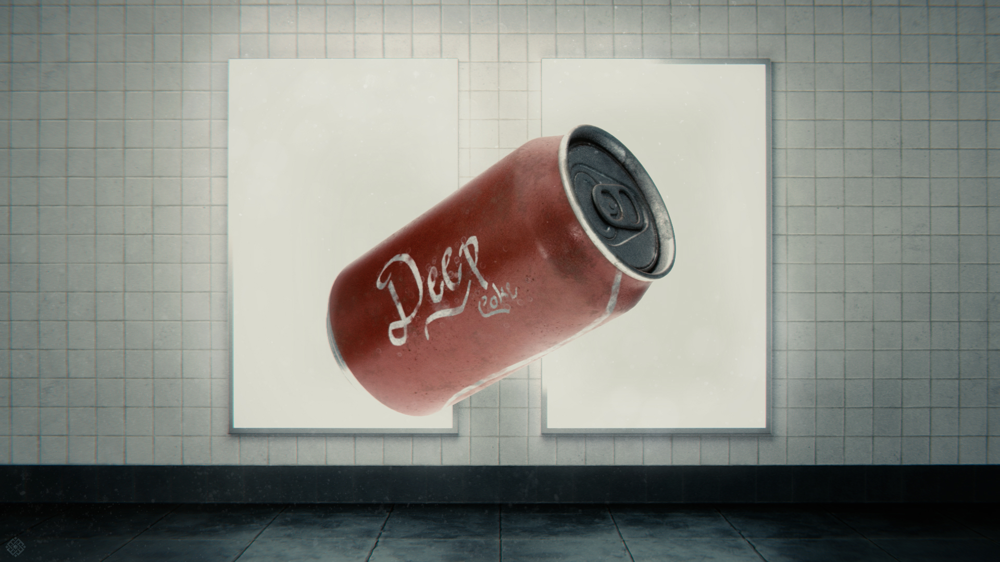
A random scene I made for a friend.
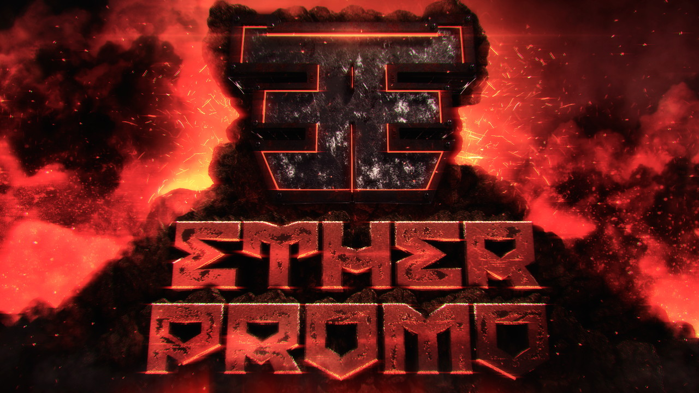
A YouTube thumbnail for a CoD channel.
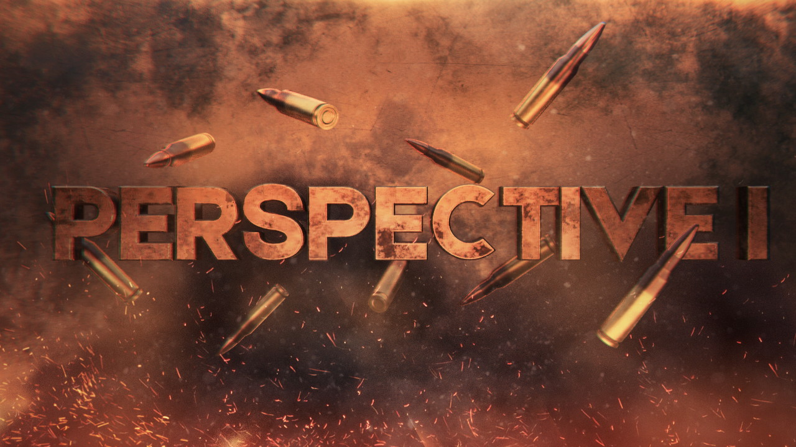
Another CoD YouTube video thumbnail.
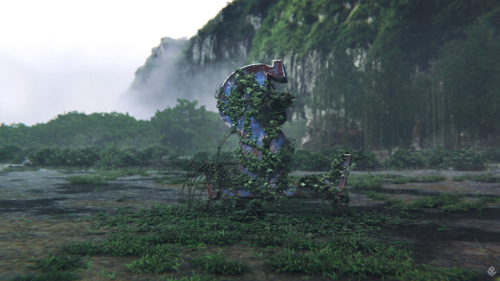
My first outside environment ! It was a wallpaper for a CoD team. Ivy was generated with Ivy Generator
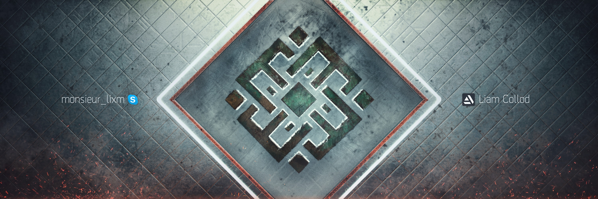
A banner for myself, yes when Skype was my main communication platform 💀
A CSGO themed wallpaper that was probably a one-day thingy.This fucker was my final year high-school project; some kind of magnetic mechanism to shoot the balls in pinball machines.
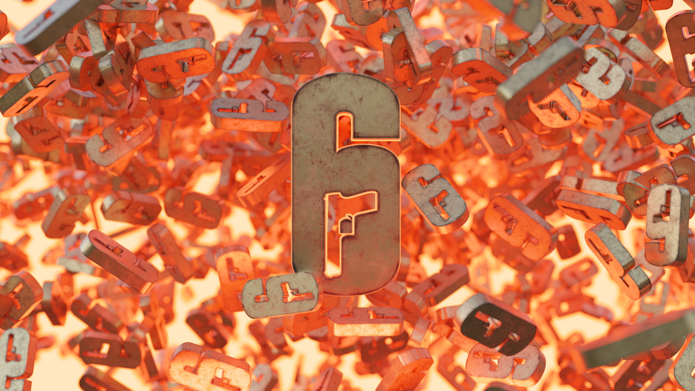
A Rainbow Six Siege themed wallpaper. Logo texturing was made in Quixel DDO.
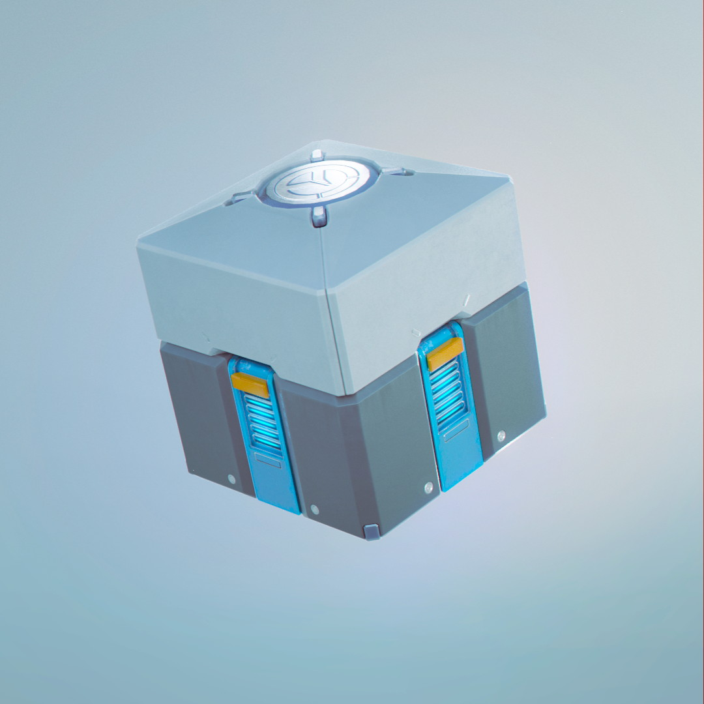
One of my first school 3d assignment where I learned to use Maya.
Another boring and simple asset because I didn't like modeling and preferred texturing.A "spooky" themed render for Halloween where I did some basic simulation effects in Blender.
This was a school exercice where we had to create a fire FX with Maya native tools.
I quickly throwed some Megascans assets around to make a quick environment.
An animated logo for someone.
A simple animated logo for a Discord server.Another simple motion-design for a Discord server.
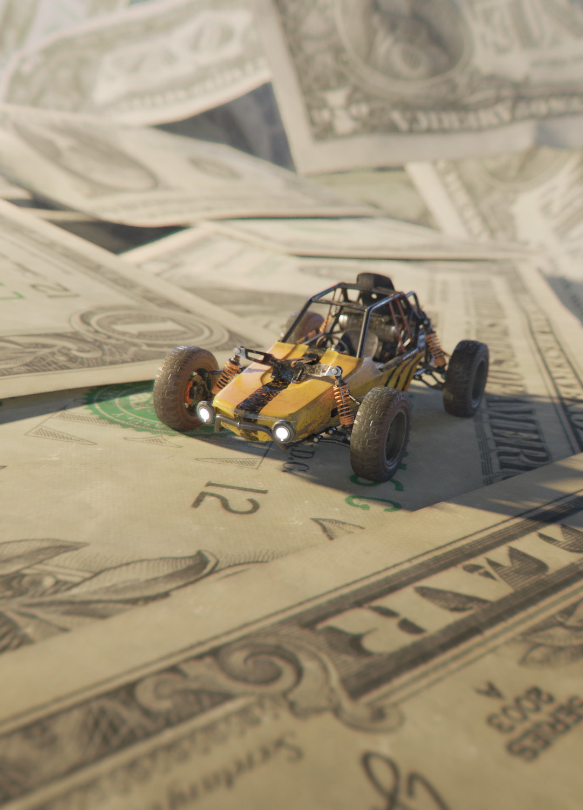
What idea do I even had in mind here ? If you don't recognize it, the vehicule is the buggy from the PUBG videogame.
A small nature scene I created as part of Blender EEVEE and Megascans tutorial.
archives
Welcome to the archives, where I dumped anything that I considered too old or too
cringe .
I started digital art with Blender around 2014 when I got my first personal computer.
Wild times, Blender was the only serious creative software I had. I was doing some
shitty graphic design on PowerPoint and shitty video editing on Windows Movie Maker.
It was around that time that I started to play my first online multiplayer videogame:
World Of Tanks. There was some very cringe fanart and post of me haunting the WoT french forums
(that I learned were now closed and wiped out ...).
Then around 2015 I got introduced by a friend to
the Call Of Duty "GFX" community which opened me to a whole new world of graphic-design.
It introduced me to piracy to get better software and gave me a community to build
motivation for projects. So most of my 3D work during those period was mixing 3D
logo/text with 2D elements rather than proper cg scene.
I then ended up joining other gaming communities around Rainbow Six Siege and PUBG.
During all those times my 3D skill were very primitive, so I mostly relied on people
extracting 3d models and textures from video-games.